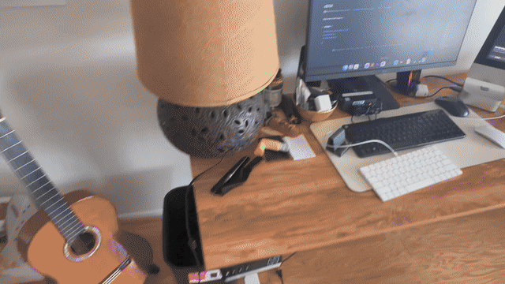
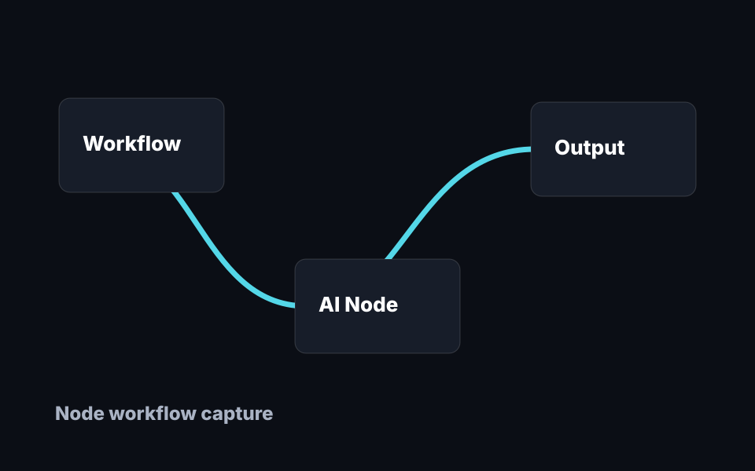
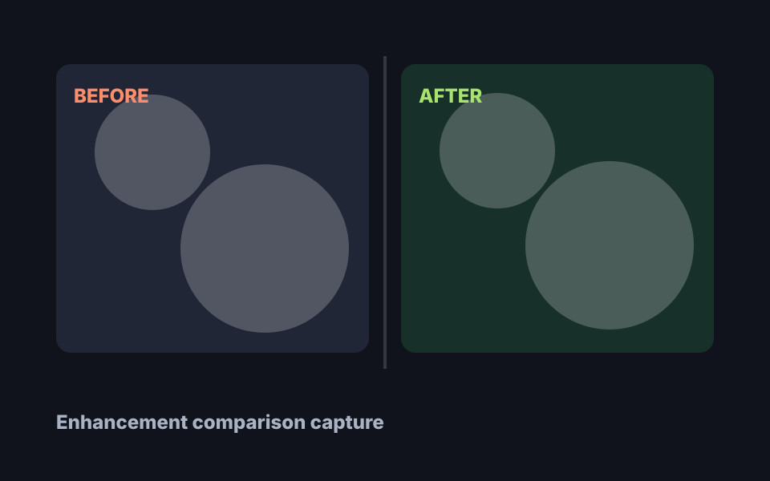
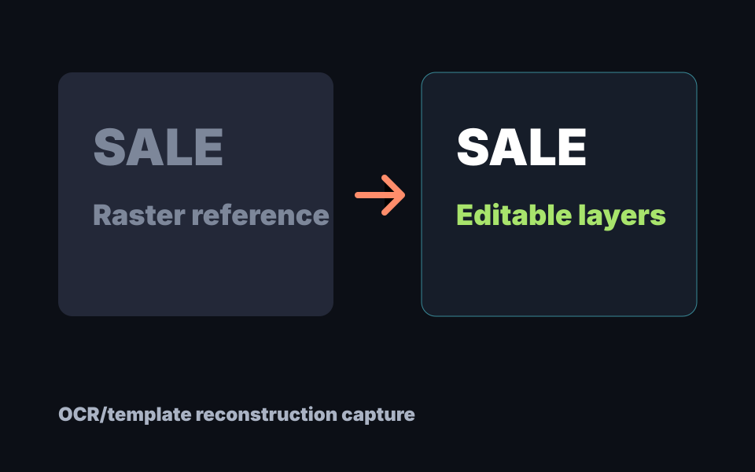
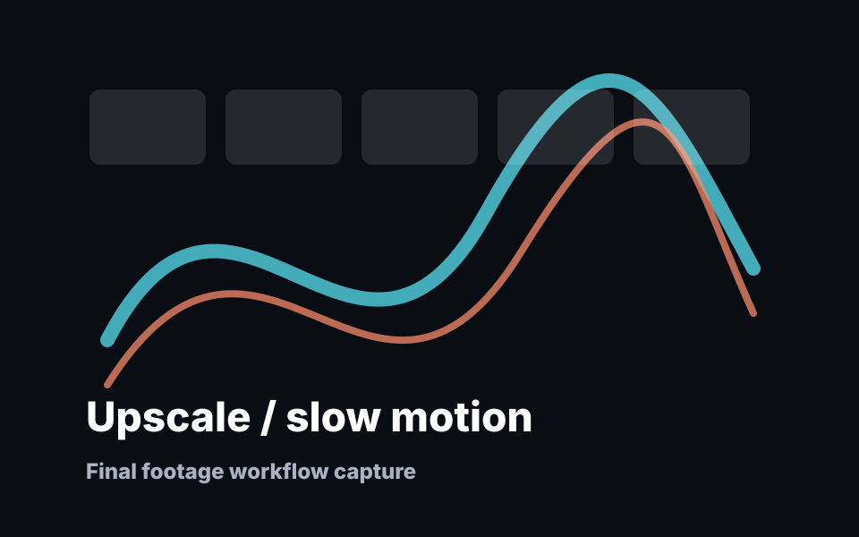

Creative AI for motion work
AetherFlow
Node-based AI workflows for Adobe After Effects.
Build and run local AI workflows for image, video, graphics, text, enhancement, depth, normals, and camera-focused production tasks from a visual node interface.
Public releases. Artist-facing workflows. Built for After Effects users.
Product previews
A visual workflow layer for creative AI in After Effects.
AetherFlow is designed around the moments artists actually repeat: choosing a source, chaining AI tools, reviewing generated media, and bringing usable results back into a comp.





What it does
AI workflows that feel like a creative tool.
Build node graphs that connect After Effects sources to local AI workflows and return artist-reviewable outputs.
Use runtime-managed tools without turning every experiment into a separate install, script, or command-line session.
Work across image generation, video enhancement, OCR/template text, graphics reconstruction, depth, normals, and other production passes.
Reduce repetitive setup work so motion designers, editors, VFX artists, and creative teams can spend more time shaping the shot.
Key features
Built around the way artists iterate.
Node-based workflow editor
Build reusable visual pipelines with clear source, model, processing, and output steps.
Local runtime-managed AI
Run supported AI workflows locally from the extension while AetherFlow manages the runtime surface around them.
After Effects integration
Keep creative iteration close to comps, layers, timing, references, and finishing work.
Image and video workflows
Route generation, enhancement, cleanup, upscaling, and processing tasks through visual workflows.
Graphics and text workflows
Use OCR/template text and graphics reconstruction paths for editable, reviewable creative outputs.
Depth / normal / UV workflows
Generate supporting passes for compositing, stylization, relighting, spatial effects, and look development.
Camera and motion tools
In development: camera extraction, tracking helpers, and motion-aware nodes for shot-based workflows.
Custom model nodes
Preview: future custom-node surfaces for adding specialized local models without turning the tool into raw engineering UI.
Support development
Public downloads, free documentation, optional support.
AetherFlow’s public releases and user documentation stay available without a paywall. GitHub Sponsors helps fund the unglamorous parts that make a creative tool usable: testing, packaging, runtime work, and careful documentation.
- Development time
- Testing hardware
- GPU/runtime experiments
- Model integration work
- Documentation
- Installer and packaging work
- Continued development
GitHub Sponsors Active
Latest release Download
Documentation Read
Support is optional. Every release remains public, transparent, and usable without payment.
Roadmap
Future Features
These items show the direction of the product. Anything experimental, preview, or in development should be treated as future-facing until it appears in a public release.
Stable installer
More reliable OCR workflows
Better video enhancement tools
Camera extraction / motion tracking nodes
Model manager
Improved documentation
Creative-user onboarding
Custom model node preview
Public resources
Everything users need to get started.
Use the docs for installation and workflow guidance, grab the latest public release, and support development if AetherFlow is useful in your creative pipeline.